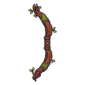
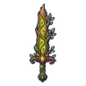
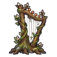
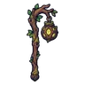
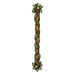
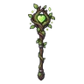
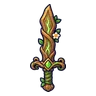

ต้นไม้ยักษ์โบราณ
มอนธาตุดิน Lv 74–99
เจอที่
| แมพ | โซน | Lv | ภูมิภาค |
|---|---|---|---|
| ป่าดึกดำบรรพ์ | 90–95 | ที่ราบสูง | |
| ป่าดึกดำบรรพ์ | ใจกลางป่าโบราณ | 96–99 | ที่ราบสูง |
| หนองน้ำมันดิน | 74–92 | ที่ราบสูง | |
| บ่อน้ำร้อนดึกดำบรรพ์ | 74–92 | ที่ราบสูง | |
| บ่อน้ำร้อนดึกดำบรรพ์ | ลานหินปูนขั้นบันได | 86–92 | ที่ราบสูง |
| หอรากมืด (Dark Root) | หัวใจต้นไม้มืด | 90–99 | |
| หอดาวร่วง | ชั้นหอดาวร่วง | 89–99 |
ค่าสถานะตามเลเวล
| Lv | HP | ATK | DEF | MDEF | EXP | Job |
|---|---|---|---|---|---|---|
| 74 | 78,684 | 200–300 | 47 | 18 | 134 | 101 |
| 86 | 123,114 | 242–362 | 55 | 21 | 154 | 116 |
| 99 | 181,500 | 301–451 | 60 | 24 | 175 | 131 |
ตีด้วยธาตุไหนดี
แรงขึ้น: ไฟ ×1.5 พิษ ×1.25
เบาลง: ลม ×0.5 ดิน ×0.25
วัตถุดิบที่ดรอป
| ของ | โอกาส | |
|---|---|---|
| ยางไม้โบราณ | 50% | 1 ชิ้น (15% ได้ 2) |
อุปกรณ์ที่ดรอป (10)
| ของ | โอกาส |
|---|---|
| กระดิ่งวิญญาณต้นไม้โบราณ | 0.25% |
| 0.25% | |
 ธนูแก่นไม้โบราณ | 0.25% |
 ดาบใหญ่ไม้โบราณ | 0.25% |
 เครื่องดนตรีต้นไม้ยักษ์โบราณ | 0.25% |
 ตะเกียงแขนต้นไม้โบราณ | 0.25% |
 ไม้พลองรากไม้ยักษ์ | 0.25% |
 คทาหัวใจพงไพร | 0.25% |
| 0.12% | |
 ดาบไม้ต้นไม้โบราณ | 0.12% |
สกิล
ทุบพื้น (Lv 25+) · ทุบพื้น (Lv 60+) · ร่างแข็ง (Lv 60+)